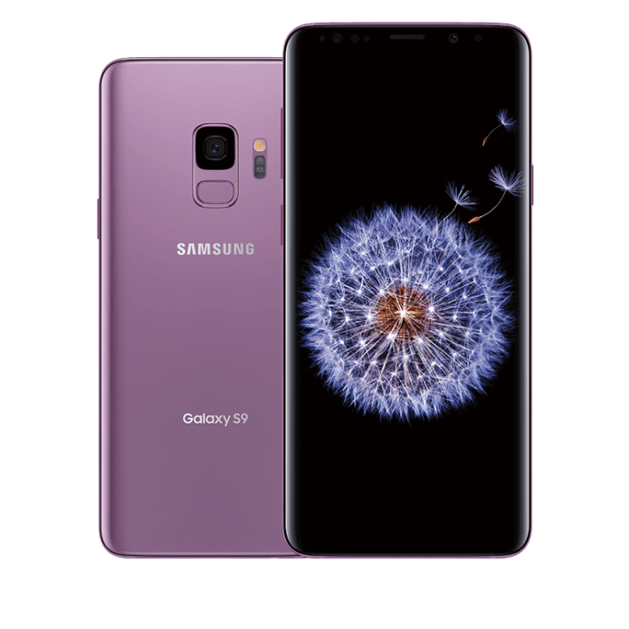

Introducing the new
Galaxy S9 / Galaxy S9+
Lock Screen and AOD
The lock screen is the part of the smartphone we interact with the most. It’s often one of the first things we see when we wake up and check throughout the day. Galaxy S9 and S9+’s lock screen features give you the best platform to tell your own story every day. With the video wallpaper function, you can customize the lock screen to play your favorite images to keep you inspired all day long. The feature even lets you transform your treasured Super Slow-mo videos into lock screen wallpapers. You can also try making the notification bars on the lock screen transparent to see all the things that matter to you more clearly.

Set your favorite Super Slow-mo moment as video wallpaper
But there is much more

Low light photos
The camera that's brilliant in the dark. The F1.5 aperture mode finds light even in the dark. So the low light camera delivers vibrant photos late into the night. Meaning your camera no longer has a curfew.